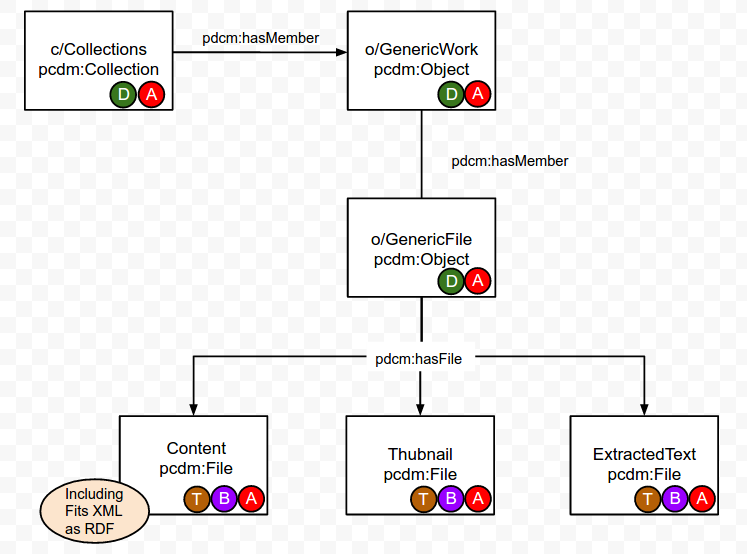

This is a draft for a course first offered at Code4Lib 2016. It is not complete. Caveat emptor.
Legacy Data modeling
1. What modeling looked like in "Dive into Hydra"
* `has_many/belongs_to` or `has_and_belongs_to_many`
1. Shortcomings
* Every project has a unique structure
* Lack of ordering
* Resource contention
PCDM
Structural model

Hands on
Projection onto LDP
* LDP Containers
* ORE Aggregation
* List node
Problems
Lots of writes
Resource contention
Curation Concerns
Model
Actor
Indexer
Presenter
Form
Replace the "rights" field with "copyright_status"
module CurationConcerns
class AudioRecordingForm < CurationConcerns::Forms::WorkForm
self.model_class = ::AudioRecording
delegate :copyright_status, to: :model
self.terms -= [:rights]
self.terms += [:copyright_status]
end
end